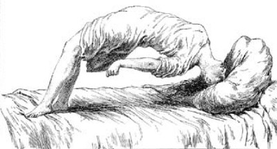
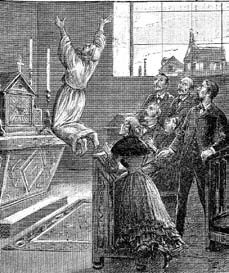
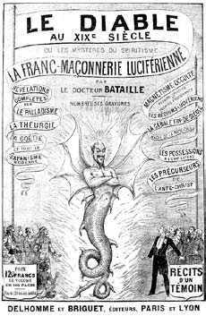
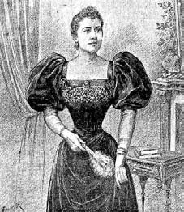

14 Nisan 1897
Sevgili Yüzbaşı Simonini,
bir kez daha: Sizin düşüncelerinizin bulanıklaştığı yerde benim en canlı anılarım su yüzüne çıkıyor.
Efendim, bana bugün öyle geliyor ki, ben önce Bay Hébuterne, sonra da Peder Bergamaschi ile buluşuyorum. Sizin adınıza gidiyor ve Léo Taxil'e vereceğim parayı tahsil ediyorum. Léo Taxil'e de Noter Fournier adına gidiyorum.
"Bayım" diyorum ona, "sizi, alay konusu ettiğiniz İsa Peygamber'i kabul etmeye davet etmek için üzerimdeki rahip giysisini kalkan olarak kullandığımı düşünmenizi istemem; sizin cehenneme gitmeniz umurumda değildir. Buraya size ebedi hayatı vaat etmek için gelmedim, burada bulunmamın nedeni, masonluğun ağır suçlarını ifşa eden bir dizi yayının, çok geniş bir kitle olarak tanımlamakta tereddüt etmeyeceğim iyi niyetli okur bulacağını düşünmemdir. Sadece Fransa'nın değil, bütün dünyanın manastırlarının, kiliselerinin, piskoposluklarının destek vermesinin bir kitaba ne büyük bir katkı sağlayabileceğini bilemiyor olabilirsiniz. Sizi inançlarınızdan saptırmak değil para kazanmanızı sağlamak amacıyla burada bulunduğumu kanıtlamak için basit iddialarımı dile getireceğim. Gelecekteki kazancınızın yüzde yirmisini bana (ya da temsil ettiğim mümin tarikata) bırakan bir belge imzalamanız halinde sizi masonik sırlar konusunda sizden daha bilgili biriyle tanıştırabilirim."
Yüzbaşı Simonini, Taxil'den alacağımız yüzde yirmiyi aramızda paylaşacağımız konusunda anlaştığımızı tahmin ediyorum. Bu olmayınca ona bir başka daha teklif yaptım: "Sizin için yetmiş beş bin frank daha var, kimden geldiğini sormayın; belki giysim size ipucu verebilir. Yarın dinsel inançlarınız konusunda değişiklik yaptığınızı kamuoyuna açıklayacağınıza söz verirseniz, biz sözünüze itimat ederek size bugün yetmiş beş bin frank ödeyeceğiz. Bu yetmiş beş bin frank üzerinden, bakın yetmiş beş bin diyorum, hiç komisyon ödemeyeceksiniz, çünkü benim ve bana vekâlet veren kişiler için, para şeytanın pisliğinden başka bir şey değildir. Düşünün bakın: yetmiş beş bin frank."
Sanki bir dagerotipten bakıyormuşum gibi, sahne gözlerimin önünde.
O anda kapıldığım izlenime göre (her ne kadar masanın üstündeki para gözlerini parlatmış olsa da) Taxil'i etkileyen yetmiş beş bin frank ve sonraki baskıların haklarından çok, onun gibi nasırlaşmış bir kilise düşmanının üç yüz altmış derecelik dönüşle ateşli bir Katolik oluşu fikriydi. Başkalarının şaşkınlığının, gazetelerde hakkında çıkan yazıların tadını çıkartıyordu. Bu Leman Gölü'nün dibinde Roma şehri kalıntısı uydurmaktan çok daha iyiydi.
Keyifle gülüyordu ve şimdiden gelecekteki kitaplar ve hatta içlerine konacak resimlerin hayalini kuruyordu.
"Ah" diyordu, "bunun kurmaca bir romandan çok masonluğun gizemleri üzerine tam bir inceleme yazısı olacağını düşünüyorum. Kapağa Tapınak Şövalyeleri'nin satanik ayinlerini hatırlatmak için kanatlı bir Baphomet koyarız... Tanrı aşkına (bu ifademi bağışlayın rahip bey), günün haberi olacaktır bu. Zaten benim o berbat kitaplarımın söylediklerinden sonra, Katolik ve inançlı olmam ve din adamlarıyla iyi ilişkiler içinde bulunmam, yüzüme İsa Peygamber'i çarmıha geren benmişim gibi bakan ailem ve komşularım için de onurlu bir durum yaratacaktır. Peki, sizce kim yardım edebilir bana?"
"Sizi bir kâhinle tanıştıracağım, hipnoza girdiğinde Paladist ayinler konusunda inanılmaz şeyler anlatan bir varlıktır."
* * *
Kâhin Diana Vaughan olacaktı. Sanki onun hakkında her şeyi bilir gibiydim. Bir sabah Vincennes'e gittiğimi hatırlıyorum; sanki Doktor Du Maurier'nin kliniğinin adresini ezelden biliyordum. Klinik büyük boyutlarda olmayan bir evdi, minik ama sevimli bir bahçesi vardı; huzurlu görünüşlü hastalar, birbirlerini kesinlikle görmezden gelerek ama güneşin tadını çıkartarak burada oturup sıralarını bekliyorlardı.
Sizin benden söz ettiğinizi söyleyerek Du Maurier'ye kendimi tanıttım. Zihinsel rahatsızlığı olan gençlerle ilgilenen mümine hanımların kurduğu bir derneğe şöyle bir değindim ve onun bir yükten kurtulduğunu hissettim.
"Sizi uyarmalıyım" dedi, "Diana bugün normal diye tanımladığım halde. Yüzbaşı Simonini size anlatmış olmalı; bu durumdayken çizgisinin dışında, kendini gizemli bir masonik tarikatın müridi sanıyor. Onu telaşlandırmamak için, sizi mason birader olarak tanıştıracağım... Umarım bir din adamı olarak bundan rahatsız olmazsınız."
Beni sadece bir dolap ve yatakla, son derece sade biçimde döşenmiş bir odaya aldı, beyaz kumaşla kaplanmış koltukta ince hatlı, başının tepesinde topladığı bakır yansımalı sarı saçlı, küçük ve biçimli dudaklı ve de gururlu bakışlı bir kadın oturuyordu. Dudakları hemen alaycı bir gülümsemeyle aralandı: "Doktor Du Maurier beni kilisenin anaç kollarına mı atmak istiyor?" diye sordu.
"Hayır, Diana" dedi Du Maurier, "giysisine rağmen bu bay bir biraderdir."
"Hangi obediyanstansınız?" diye sordu hemen Diana.
Marifetli bir şekilde açık vermedim: "Söylememe izin yok" diye fısıldadım temkinli bir şekilde, "neden olduğunu bilirsiniz..."
Tepkimi hemen sahiplendi: "Anlıyorum" dedi Diana. "Sizi Charleston Üstadı Muhteremi gönderiyor. Olaylara ilişkin yorumumu ona iletebileceğiniz için memnunum. Toplantı Croix Nivert Sokağı'nda, Les Coeurs Unis Indivisibles locasındaydı; orayı bilirsiniz. Kadın Tapınak Üstadı olarak inisiye edilmem gerekiyordu ve biricik iyi tanrı Lusifer'e tapınmak ve Katoliklerin baba tanrısı kötü tanrı Adonay'ı yermek için sonsuz bağlılığımla ortaya çıkıyordum. İnanın bana, hevesle Baphomet sunağına yaklaştım, orada beni bekleyen Sophia Sapho beni Paladist ilkeler konusunda sorguya çekmeye başladı ve ben bütün alçakgönüllülüğümle ve sadakatimle yanıtladım onu: 'Bir Kadın Tapınak Üstadı'nın görevleri nelerdir? İsa'dan tiksindirmek, Adonay'a lanet okumak, Lusifer'i kutsamak. Üstadı Muhterem'in arzusu bu değil mi?' " Ve bu soruları sıralarken, Diana ellerimi yakalayıverdi.
"Elbette öyle" dedim çekingence.
"Ve ayinsel yakarımı okumaya başladım: Gel, gel ey yüce Lusifer, rahipler ve krallarca iftiraya uğrayan! Mecliste bulunan her üye yumruğunu havaya kaldırarak 'Nekam Adonay, Nekam!' diye haykırdıkça ben heyecandan titriyordum. Ama tam o noktada, ben kurban masasına doğru çıkarken Sophia Sapho dinsel nesneler satan dükkânların vitrinlerinde gördüğüm türden bir ayin tepsisi uzattı; Roma kültüne ait bu korkunç şeyin bu törende ne işi var diye düşünmeye başladığımda Kadın Üstadım bana şunu açıkladı: İsa kendi gerçek tanrısına ihanet etmiş, Tabor Dağı'nda Adonay ile alçakça bir anlaşma imzalamış ve ekmeği kendi bedenine dönüştürerek düzeni yıkmıştı; işte şimdi bizim görevimiz, İsa'nın bu ihanetini her gün yinelemek için kullandıkları küfürlü ekmeği hançerlemektir. Söyleyin bayım, bu hareketin bir inisyasyonun parçası olmasını ister mi Üstadı Muhterem?"
"Bunu dile getirmek bana düşmez. Belki siz ne yaptığınızı söylerseniz daha iyi olur."
"Reddettim tabii ki. Kutsal ekmeği hançerlemek onun gerçekten İsa'nın bedeni olduğuna inanmak anlamına gelir, oysa bir Paladist bu palavraya inanmamalıdır. Kutsal ekmeği hançerlemek inançlı Katolikler için bir Katolik ritüelidir."
"Sanırım haklısınız" dedim. "Bir elçi olarak bu mazeretinizi Üstadı Muhterem'e bildireceğim."
"Teşekkür ederim kardeşim" dedi Diana ve ellerimi öptü. Sonra neredeyse umursamazca gömleğinin üst düğmelerini çözdü ve bembeyaz omzunu ortaya çıkararak davetkâr gözlerle baktı bana. Ama ansızın koltuğa devrildi ve çırpınmaya başladı. Doktor Du Maurier bir hemşire çağırdı ve kızı birlikte yatağa taşıdılar. Doktor şöyle dedi: "Genellikle böyle bir kriz yaşadığında bir halden ötekine geçiyor. Henüz bilincini yitirmedi, sadece çene kemiği ve dili kasıldı. Hafif bir yumurtalık masajı yeter..."
Bir süre sonra Diana'nın alt çene kemiği sola doğru açıldı, ağzı çarpıldı, açık ağzında yarım daire halinde kıvrıldığı için ucu görünmeyen dili ortadaydı; hasta sanki dilini yutmak üzereydi. Sonra açılan dili ansızın ağzından dışarı sarktı ve yılan misali defalarca hızla içeri dışarı girip çıktı. En nihayetinde dili ve çene kemiği normal haline döndü ve hasta birkaç sözcük söyleyebildi: "Dilim... damağımı yaraladı... Kulağımda örümcek var..."
Kısa bir dinlenme süresinden sonra hastanın dili ve çene kemiği bir kez daha kasıldı, sonra yumurtalığına yapılan masajla sakinleşti ama bir süre sonra yeniden solunumda zorlandı, ağzından kopuk kelimeler döküldü, bakışı sabitlendi; kolları kendine sarılarak kasıldı, bilekleri sırtına değiyordu, bacakları uzamış gibiydi...
"Ayakları içe döndü" dedi Doktor Du Maurier. "Bu epileptik aşama. Normaldir. Bundan sonra da soytarı aşaması gelecek..."
Diana'nın yüzüne yavaş yavaş kan geldi, ağzı yavaş yavaş açılıp kapanmaya başladı ve dudaklarının arasından beyaz köpükler çıktı. Hasta şimdi "uh! uh!" şeklinde inliyor, çığlıklar atıyordu; yüz kasları kasılıyor, göz kapakları açılıp kapanıyordu; hasta sanki bir cambaza dönmüş gibiydi, bedeni yay gibi kıvrılıyor, düz yatamıyordu.

...hasta sanki bir cambaza dönmüş gibiydi, bedeni yay gibi kıvrılıyor, düz yatamıyordu.
Birkaç dakika boyunca sanki ağırlığını yitirmiş, dağılmış bir sirk kuklasının korkunç gösterisini izledik, sonra hasta yeniden yatağa devrildi ve Du Maurier'nin "ateşli" diye nitelediği hale geçti; önce sanki bir saldırganı itmek istercesine tehdit dolu bir hal aldı, sonra da sanki birine göz kırpan bir yosmaya benzedi. Sonra müşterisini diliyle davet eden bir fahişenin açık saçık hallerini yansıtmaya başladı; daha sonra sevda yalvarışlarına başladı; ıslak bakışlar, uzanan kollar, bitişen eller, öpücük istercesine öne uzanan dudaklar derken gözbebekleri arkaya kaçtı ve gözünün sadece akı görünür oldu ve ansızın erotik bir baygınlık içersinde patladı: "Ah güzel efendim" diyordu çatlak bir sesle, "ah sevgili yılan, kutsal engerek yılanı... Ben senin Kleopatra'nım... Burada mememde... süt vereceğim sana... ah aşkım, gir olduğun gibi içime...."
"Diana şimdi kutsal yılanlarından birinin içine girdiğini görüyor, başkaları kendileriyle birleşen Kutsal Yürek görürler. Fallik bir form, egemen bir erkek imgesi ile onu çocukken taciz etmiş olan erkeği görmek" diyordu Du Maurier, "bazen bir isterik için aynı şeydir. Bernini'nin Santa Teresa oymalarını görmüşsünüzdür: Bu zavallıdan hiçbir farkı yoktur. Mistik insan, aslında günah çıkarıcıya hekimden önce rastlamış olan bir isteriktir."
Diana bu arada haç şeklini almış ve yeni bir aşamaya girmişti: Birilerine dehşetli tehditler savuruyor, korkunç açıklamalar yapacağını söylüyordu; bir yandan da yatakta kıvranıyordu.
"Bırakalım dinlensin" dedi Du Maurier, "uyandığında ikincil aşamaya girmiş olacak ve size anlattığını hatırlayacağı şeyler yüzünden çok acı çekecek. Sizin müminelere böyle krizler yaşadığı zaman korkmamaları gerektiğini söyleyin. Onu sabit tutmak ve dilini ısırmaması için ağzını tıkamak yeterlidir; ayrıca vereceğim sıvıdan birkaç damlayı boğazına damlatmak iyi gelecektir."
Sonra ekledi: "Önemli olan bu varlığı başkalarından ayrı tutmaktır. Ve bunu artık burada tutamam, çünkü burası hapishane değil bakımevidir, insanlar serbestçe dolaşırlar, aralarında konuşmaları tedavisel olarak da yararlı ve şarttır; burada normal ve huzurlu bir hayat sürdürdüklerini hissetmelidirler. Konuklarım deli değil, sinir rahatsızlığı geçiren kişilerdir. Diana'nın krizleri öteki hastaları etkileyebilir ve 'kötü' aşamasında açıkladığı sırlar, ister doğru ister yalan olsun, herkesi sarsar. Sizin mümine hanımların onu ayrı tutabilme olanağı vardır umarım."
Bu buluşmadan edindiğim izlenim doktorun Diana'dan kesin olarak kurtulma arzusuydu, aslında onun bir yere kapatılmasını istiyordu, çünkü başkalarıyla kuracağı temastan korkuyordu. Buna ek olarak hastanın anlattıklarının ciddiye alınmasından çekiniyor ve bir delinin saçmalamasından başka bir şey olmadığının bilinmesini istiyordu.
* * *
Birkaç gün önce Auteuil'deki evi kiralamıştım. Özel bir ev değildi ama oldukça sevimliydi. Girişte tipik kentsoylu ailelerine özgü minik bir salon vardı: Eski Utrecht kadifesiyle kaplanmış maun rengi bir divan, kırmızı kendinden desenli perdeler, şöminenin üzerinde duran sarkaçlı saat ve iki yanındaki cam fanus içindeki çiçekler, aynaya dayanmış bir konsol odanın dekorunu oluşturuyordu ve yerler güzel parlayan taşla kaplanmıştı. Onun yanında Diana'ya ayırdığım yatak odası bulunuyordu: Duvarlar ebruli, inci grisi bir kumaşla kaplanmış, zemin iri kırmızı güllerle süslü kalın bir halıyla örtülmüştü. Yatağın ve pencerenin perdeleri aynı kumaştandı; geniş menekşe rengi çizgileri odanın tekdüzeliğini kırıyordu. Yatağın üzerine asılı tek renkli baskıda iki âşık çoban tasvir edilmişti; konsolun üzerindeki sarkaçlı saat yapay taşlarla süslenmişti; bunun iki yanındaki kanatlı çocuk melekler, şamdan formunda zambaklar taşıyorlardı.
Üst katta iki yatak odası daha vardı. Birini yarı sağır, içkiye meyilli, buralardan olmayan ve para uğruna her şeye katlanmaya hazır bir ihtiyar kadına ayırmıştım. Onu bana kimin önerdiğini hatırlamıyorum ama evde kimse yokken Diana'ya bakması, kriz geçirdiğinde sakinleştirebilmesi için uygun biri olduğunu düşünmüştüm.
Öte yandan şimdi yazarken, ihtiyar kadının bir aydır benden haber almamış olduğunu fark ediyorum. Belki ona yetecek kadar para bırakmıştım ama ne zamana kadar? Şimdi hemen Auteuil'e koşmalıyım ama adresi hatırlamadığımı anlıyorum: Auteuil'de nerede? Bütün mahalleyi dolaşıp, orada çift kişilikli Paladist bir isteriğin yaşayıp yaşamadığını sorabilir miyim acaba?
* * *
Taxil, nisan ayında ihtida edeceğini resmen açıklamış, kasım ayında masonluk konusunda tehlikeli açıklamalarla dolu ilk kitabı Les frères trois-points çıkmıştı. Aynı dönemde onu Diana'yı görmeye götürdüm. İkili durumunu saklamadığım gibi, kızın bize ürkek kız çocuğu halinde değil pişmanlık nedir bilmeyen Paladist halinde yararlı olacağını bildirdim.
Son aylarda kızı derinlemesine incelemiştim ve Doktor Du Maurier'nin verdiği damlayla, hal değişimlerini denetim altında tutabilmiştim. Ama bir anda baş gösteren krizleri beklemenin sinir bozucu olduğunu anlamıştım ve Diana'ya bu hal değişimlerini yaşatabilmenin yolunu bulmak gerektiğini düşünmüştüm: Zaten sanırım Doktor Charcot da isterik hastalarıyla böyle yapıyordu.
Charcot'nun manyetik yeteneğine sahip olmadığımdan kütüphaneye gitmiş ve eski (ve gerçek) rahip Faria'nın yazdığı De la cause du sommeil lucide gibi daha geleneksel metinleri taramıştım. Bu kitaptan ve okuduğum başka satırlardan esinlenerek kızın dizlerini kendi dizlerim arasına sıkıştırmaya, başparmaklarını iki parmağımla sıkıcı tutmaya ve gözlerinin ta içine bakmaya, böyle beş dakika durduktan sonra ellerimi çekmeye, omuzlarına koymaya, beş altı kez parmak uçlarına kadar kollarını sıvazlamaya, sonra ellerimi başına dayamaya, ardından beş altı santim uzaklıktan karnına kadar indirmeye, kaburgalarının altına gelmeye ve nihayet ellerimi dizlerine ve hatta ayak parmaklarına kadar indirmeye karar vermiştim.
İffet söz konusu olunca, "iyi" Diana için bu fazla tacizkâr olabilirdi ve başlangıçta sanki (Tanrım beni bağışlasın) bekâretine göz dikmişim gibi çığlıklar atıyordu ama, etkisi o kadar kesindi ki, kız bir anda sakinleşiyor, birkaç dakika uyukluyor, bir önceki halinde uyanıyordu. Onu ikincil hale döndürmek daha kolay oluyordu, çünkü "kötü" Diana bu dokunuşlardan hoşlanır gibiydi ve ellerimin dolaşmasını uzatmak istercesine bedenine kösnül hareketler yaptırıyor, inliyordu; neyse ki hipnotik etkiden kolay çıkmıyordu ve bu halde de uyukluyordu; yoksa hem beni rahatsız eden bu teması uzatmak hem de onun iğrenç azgınlığını denetim altına almakta sorun yaşayabilirdim.
* * *
Giysim ve inancım gereği cinselliğin sefilliğinden uzak durmaya alışmış biri olarak bile, her erkeğin Diana'yı çekici bir varlık olarak değerlendireceğine inanıyorum; Taxil de besbelli pek iştahlı bir erkekti.
Doktor Du Maurier hastasını bana teslim ederken Diana'nın tedaviye gelirken yanında getirdiği ve son derece şık giysilerle dolu bavulunu da yanıma vermişti – belli ki kız iyi bir aileye mensuptu. Taxil'in onu ziyarete geleceğini haber verdiğim gün belirgin bir şuhlukla süslenmişti. Her iki halinde de, kendinde olmasa bile bu gibi kadınsı ayrıntılara son derece özen gösteriyordu.
Taxil onu görür görmez büyülenmişti (dudaklarını şapırdatarak "güzel kadın" diye fısıldamıştı bana) ve daha sonra benim hipnotik çalışmamı yinelemeye çalıştığında hasta derin uykuya daldığında bile ellerini üzerinden çekmemişti; öyle ki sonunda utana sıkıla "Sanırım artık yeter" diye uyarmak zorunda kalmıştım.
Korkarım, Diana'yı birincil halindeyken onunla yalnız bıraksaydım daha ileri gitmeye yeltenecek, kız da o durumunda ona izin verecekti. Bu nedenle kızla konuşmalarımızın hep üçümüz arasında geçmesine özen gösteriyordum. Hatta dört kişi arasında: Satanist ve Lusifer sevdalısı Diana'nın anılarını ve enerjisini (ve Lusifer'e uygun halini) canlandırmak için onun Rahip Boullan ile de temas kurmasını uygun bulmuştum.
* * *
Boullan. Paris başpiskoposu onu görevden alınca Lyon'a gitmiş ve üzerine baş aşağı duran haçın ve Hint fallus sembolüyle süslü bir tacın işlenmiş olduğu cüppesiyle ayin yapan bir vizyoner olan Vintras'ın kurduğu Carmelo cemaatine katılmıştı. Vintras dua ederken yerden yükselir, bütün müritlerini vecde sürüklerdi. Ayinlerin sonunda dağıttığı kutsal ekmeklerden kan damlardı ama pek çok kişi eşcinsel ilişkilerden, aşk rahibeleri ısmarlamaktan, duyularla oynamaktan yani Boullan'ın pek meyilli olduğu yöntemlerden de söz ediyordu. Öyle ki Vintras öldüğünde, Boullan kendini onun halefi ilan etmişti.

Vintras dua ederken yerden yükselir, bütün müritlerini vecde sürüklerdi.
Ayda en az bir kez Paris'e geliyordu. Demonolojik açıdan Diana gibi bir varlığı incelemek ona doğru gelmemişti (ondaki şeytanı daha iyi çıkartabilmek için – diyordu kendisi ama artık onun nasıl şeytan çıkarttığını öğrenmiştim). Altmış yaşını geçmişti ama hâlâ manyetik diye tanımlamaktan çekinmeyeceğim bakışlara sahip dinç bir insandı.
Boullan, Diana'nın anlattıklarını –ve Taxil'in dinsel bir ciddiyetle not aldıklarını– dinliyordu ama sanki başka hedeflere yönelikti ve arada sırada kızın kulağına anlamadığımız öğütler, yönlendirmeler fısıldıyordu. Gene de bu bizim için yararlı oluyordu, çünkü masonluğun açıklanması gereken gizemleri arasında kesinlikle kutsal ekmeklerin hançerlenmesi ve farklı kara ayin şekilleri vardı ve Boullan bu konuda bir otorite sayılıyordu. Taxil değişik şeytani ayinler hakkında notlar alıyordu ve onun yergi yazıları yayımlandıkça onun masonlarının sürekli uyguladığı ayinler konusu piyasaya gittikçe yayılıyordu.
* * *
Birbiri ardına kitaplar yayımladıktan sonra, Taxil'in masonluk hakkındaki bilgisi tükenmek üzereydi. Taze fikirler sadece hipnoz altındaki "kötü" Diana'dan geliyordu: Fal taşı gibi açtığı gözleriyle belki izlediği, belki Amerika'da duyduğu ya da sadece hayalinde canlandırdığı sahneler anlatıyordu. Bizi soluksuz bırakan sahnelerdi bunlar ve (tahminime göre) deneyimli bir kişi olan ben bile altüst oluyordum. Örneğin günün birinde düşmanı Sophie Walder'in ya da öteki adıyla Sophia Sapho'nun inisyasyon törenini anlatmaya giriştiğinde sahnenin ensest tadının farkına varıyor muydu anlamıyorduk ama onu kesinlikle kınayarak değil, yaşamış birinin ayrıcalıklı keyfiyle dillendiriyordu.
"Kendi babası" diyordu Diana yavaşça, "onu uyuttu ve dudakları üzerinden kızgın bir demir geçirdi... Bedenin dışarıdan gelebilecek her türlü tuzağa karşı yalıtıldığından emin olmalıydı. Kızın boynunda kıvrılmış yılan biçiminde bir gerdanlık vardı... İşte şimdi babası onu çıkartıyor, bir sepet açıyor, içinden canlı bir yılan çıkarıyor, onu kızın karnına koyuyor... Şahane, sürünürken sanki dans ediyor, Sophie'nin boynuna tırmanıyor, gerdanlığın yerini almak üzere... Şimdi yüzüne doğru süzülüyor, titreşen dilini çıkartıyor, dudaklarına yaklaşıyor ve tıslayarak kızı öpüyor. Nasıl da... olağanüstü... kaygan... Sophie şimdi yeniden uyanıyor, ağzı köpük içinde, kalkıyor, bir heykel gibi dimdik ayağa dikiliyor, babası korsesini çözüyor, göğüslerini ortaya çıkartıyor! Ve şimdi bir çubukla göğsüne bir soru yazarmış gibi yapıyor ve kızıl harfler kızın tenine kazınıyor ve uyumuş gibi duran yılan tıslayarak uyanıyor, kuyruğuyla Sophie'nin çıplak tenine yanıtı yazar gibi yapıyor."
"Nasıl oluyor da sen bunları biliyorsun Diana?" diye sormuştum ona.
"Amerika'daki zamanlarımdan beri biliyorum... Bana Paladizm'i babam öğretti. Sonra Paris'e geldim, belki de beni uzaklaştırmak istemişlerdi... Paris'te Sophia Sapho ile karşılaştım. Her zaman düşmanım oldu benim. Onun istediklerini yapmayınca beni Doktor Du Maurier'ye götürdü. Deli olduğumu söyledi."
* * *
Diana'nın izlerini yeniden bulabilmek için Doktor Du Maurier'ye geldim. "Beni anlamalısınız doktor, ait olduğum tarikat, nereden geldiğini, ana babasının kim olduğunu bilmediği sürece bu kıza yardım edemez."
Du Maurier sanki duvarmışım gibi bakıyor bana. "Hiçbir şey bilmiyorum, söylemiştim size. Şimdi ölmüş olan bir akrabası getirdi onu bana. Akrabanın adresi mi? Tuhaf bulabilirsiniz ama artık elimde değil, çünkü bir yıl önce çalışma odam yandı ve pek çok belgem yok oldu. Geçmişine ilişkin hiçbir şey bilmiyorum."
"Peki, Amerika'dan mı geliyordu?"
"Olabilir ama aksansız Fransızca konuşuyor. Sizin tarikatın rahibelerine fazla sorun yaratmamalarını söyleyin, çünkü kızın içinde bulunduğu durumdan geriye dönmesi ve dünyaya uyum sağlaması mümkün değil. Ona yumuşak davransınlar, günlerini huzur içinde tamamlamasını sağlasınlar, çünkü size söylediğim üzere histerinin bu derece ilerlemesi ona yaşayacak fazla bir ömür bırakmaz. Günün birinde rahminde şiddetli bir yangı olacak ve tıp biliminin elinden bir şey gelmeyecek."
Yalan söylediğini düşünüyorum; belki kendi de bir Paladist'tir (Büyük Doğu üyesi olmanın yanı sıra) ve cemaatin bir üyesini canlı canlı dört duvar arasına kapamayı kabul etmiştir. Ama bunlar hep benim hayal gücümün ürünleri. Du Maurier ile konuşmayı sürdürmek zaman yitirmekten başka bir şey olmayacak.
Diana'yı hem birincil hem ikinci halindeyken sorguluyorum. Hiçbir şey hatırlamaz gibi. Boynundaki altın zincirin ucunda bir madalyon var: Ona çok benzeyen bir kadının resmi var üzerinde. Madalyonun açılabildiğini fark edince içinde ne olduğunu göstermesi için çok yalvardım ama kesin bir ısrar, korku ve yabanilikle reddetti: "Onu bana annem verdi" dedi durdu.
* * *
Taxil masonluk karşıtı kampanyasını başlatalı neredeyse dört yıl oldu. Katolik dünyasının tepkisi beklentimizin de ötesinde oldu: 1887 yılında Kardinal Rampolla, Taxil'i Papa XIII. Leon ile özel görüşmeye çağırdı. Mücadelesinin resmi şekilde kral tarafından tanınması anlamına gelen bu görüşme ona yazınsal olarak da büyük bir başarı getirdi. Ve elbette ekonomik olarak da.
Aldığım kısa ama açık not o döneme aittir: "Aziz Rahip, sanırım olay niyetimizi aştı: Gereğini yapmayı düşünür müsünüz? Hébuterne."
Geri adım atılamazdı. Bunu heyecan verici biçimde akmayı sürdüren yazar hakları kazancı için değil, Katolik dünyasıyla kurulmuş bağlantılar ve baskılar bütünü için söylüyordum. Taxil artık anti-satanizm kahramanı haline gelmişti ve elbette bu unvanı reddetmek istemiyordu.
Bu arada Peder Bergamaschi de bana veciz notlar yollamaktan geri kalmıyordu: "Sanırım her şey yolunda. Ya Yahudiler?"
Tabii ya, Peder Bergamaschi Taxil'in kaleminden sadece masonluğa değil aynı zamanda Yahudilik'e karşı da sivri ve acı damlalar bekliyordu. Oysa hem Diana hem Taxil bu noktada suskundular. Diana açısından şaşırtıcı bir durum değildi bu, çünkü geldiği Amerika'da belki burada olduğu kadar çok Yahudi yoktu ve bu soruna yabancıydı. Ama masonluk camiası Yahudi doluydu ve ben de bunu Taxil'e hatırlatıyordum.
"Ne bileyim ben?" diye yanıtlıyordu beni. "Ben masonlar arasında Yahudilerle hiç karşılaşmadım, ya da varlıklarından habersizdim. Hiçbir locada haham görmedim."
"Tabii ki oraya haham giysisiyle gelecek değillerdi. Ama son derece bilgili bir Cizvit'ten öğrendiğime göre, başpiskopos Monsenyör Meurin bir sonraki kitabında bütün masonik ayinlerin Kabalistik kökenlere dayandığını, Yahudi Kabalasının masonları şeytana tapmaya sürüklediğini kanıtlayacakmış..."
"Eh, o zaman bırakalım Monsenyör Meurin konuşsun; biz yeterince olay yarattık."
Taxil'in bu imalı ifadesi zihnimi uzun süre işgal etti (acaba Yahudi mi? diye düşünüyordum) ama sonunda dergi ve kitaplarda dile getirdiği ifadelerine iftira ve müstehcenlik davalarının açılmış olduğunu ve çok tuzlu bedeller ödemek zorunda kaldığını öğrendim. Bu nedenle bazı Yahudi tefecilere borçlanmıştı ve onlara yeniden mecbur kalabilirdi – çünkü yeni masonluk karşıtı etkinliklerinden kazandıklarını neşeyle saçıp savurmaya devam ediyordu. Şimdilik uslu duran Yahudileri kızdırmaktan korktuğu belliydi; kızdıkları anda onu borçları yüzünden hapse yollayabilirlerdi.
Ama tek neden para mıydı? Taxil şarlatanın tekiydi ama bazı duyguları da yok değildi; örneğin ailesine çok düşkündü. Bazı nedenler yüzünden pek çok zulmün kurbanı olmuş Yahudilere merhamet duyuyordu. Papaların ikinci sınıf vatandaş olarak bile olsa getto Yahudilerini koruduklarını söylüyordu.
O yıllarda aklını başka bir konuya takmıştı: Artık kendini kral yanlısı ve mason karşıtı Katolik düşüncenin sözcüsü saydığından politikaya atılmaya karar vermişti. Çevirdiği dolapları izleyemiyordum ama Paris'te belediye encümen üyeliklerinden birine aday olmuş ve Drumont gibi önemli bir gazeteciyle hem yarışa hem söz dalaşına girmişti; Yahudi ve mason karşıtı bu gazeteci, kilise mensuplarınca sözü dinlenen bir kişiydi ve kilise mensupları artık Taxil'in bir hilekâr olduğunu ima etmeye başlamışlardı – ve "ima etmek" burada hafif kalan bir deyimdi...
Taxil '89 yılında Drumont karşıtı bir yergi yazısı kaleme almıştı ve ona nasıl saldıracağını bilemediği için (çünkü her ikisi de mason düşmanıydı) onun Yahudi fobisini zihinsel bir hastalık olarak nitelemişti. Buna ek olarak bir de Rusların kıyımlarını dile getirmişti.
Drumont doğuştan polemikçi biri olduğundan bir başka yergi yazısıyla yanıt vermiş ve kilise bekçiliğine soyununca piskopos ve kardinallerce kutlanıp, kucaklanmış olmasına karşın birkaç yıl önce Papa, rahipler, papazlar ve hatta İsa ve Meryem Ana hakkında bayağı ve yakışıksız yazılar yazmış olan bu beyle alay etmişti. Ama beterin beteri vardı.
Konuşmak için Taxil'in, zemin katında eskiden Kilise Karşıtı Kitaplık'ın bulunduğu evine giderdim ve sohbetimiz, gelip gidip kocasının kulağına bir şeyler fısıldayan karısı yüzünden sık sık bölünürdü. Sonradan anladım ki, artık gayet koyu bir Katolik olmayı seçse bile Taxil deposunu dolduran ve imha etmekten kaçındığı kitapları dükkânı aşındıran ve onun gibi ihtida etmemiş kişilere karısı aracılığıyla satmayı sürdürüyordu; kendisi ortalarda görünmüyordu ama altın yumurtlayan kazı kesmeye de kıyamamıştı. Bu durum, onun inançlarında değişiklik yapmış olması konusunda bende asla kuşku uyandırmamıştı, çünkü onun tek felsefi ilkesi "para asla pis kokmaz" sözüydü.
Ne var ki bu durumu Drumont da fark etmişti; Marsilyalıya sadece Yahudilere bir şekilde bağlı olduğu değil aynı zamanda hâlâ kararlı bir kilise düşmanı olduğu gerekçesiyle de saldırıyordu. Bu da bizimkinin ödlek okurları arasında derin kuşkular yaratmaya yetiyordu.
Karşı saldırıya geçmek gerekiyordu.
"Taxil" demiştim bir gün, "Yahudilerle neden bizzat uğraşmadığınızı öğrenmek istemiyorum ama durumla ilgilenecek bir başkası çıkartılamaz mı sahneye?"
"Doğrudan işin içinde olmadığım sürece olur" yanıtını vermişti Taxil ve sonra eklemişti: "Aslında benim açıklamalarım artık yetersiz kalıyor; bizim Diana'nın anlattığı palavralar da aynen öyle. Daha fazlasını isteyen bir kitle yarattık, belki de beni Haç düşmanlarının dalaverelerini öğrenmek için değil, okuyucusunu suça ortak etmek isteyen entrika romanlarında olduğu gibi anlatımımı sevdikleri için okuyorlardır."
* * *
Ve işte Doktor Bataille böyle doğmuştu.
Taxil, gemi doktorluğu yaparak egzotik ülkeleri dolaşmış, farklı dinsel ayinlerin yapıldığı tapınaklara burnunu sokmuş olan ama daha önemlisi serüven romanları konusunda, örneğin Boussenard'ın kitapları ya da Jacolliot'un Le Spiritisme dans le monde veya Voyage aux pays mysterieux gibi hayali raporları konusunda engin kültür sahibi eski bir dostunu bulmuş ya da keşfetmişti. Kurmaca dünyasından yeni konular bulup çıkartma fikrine bütünüyle katılıyordum (zaten sizin güncelerinizden Dumas ve Sue'den esinlenmekten başka bir şey yapmadığınızı da öğrenmiştim): İnsanlar karada, denizde yaşanan maceraları ya da cinayet öykülerini sırf keyiflenmek için okuyorlar, sonra öğrendiklerini kolayca unutuyorlar ve bir romanda okudukları onlara gerçekmiş gibi anlatıldığında bunları daha önce de duymuş olduklarını şöyle bir akıllarından geçiriyor ve böylece inançlarının onaylandığını hissediyorlardı.
Taxil'in yeni keşfi olan şahıs, Charles Hacks adında bir hekimdi: Sezaryen doğum konusunda diploma almış, deniz ticaret filosu hakkında bir şeyler yayımlamış ama anlatı yeteneğini henüz ortaya dökmemişti. Akut alkolizme yenik düşmek üzere görünüyordu ve beş parasız olduğu aşikârdı. Konuşmalarından anladığıma göre dinler ve "haç histerisi" diye nitelendirdiği Hıristiyanlık karşıtı temel bir yapıt yayımlamak üzereydi ama Taxil'in önerisi üzerine şeytana tapanlar aleyhine ve kiliseyi savunarak onu yüceltmek adına binlerce sayfa yazmaya hazırdı.
1892'de, otuz ay süresince yayımlanacak 240 fasiküllük bir yayına giriştiğimizi hatırlıyorum; bu monstre eserin adı Le diable au XIXe siècle olacaktı ve kapağında alaycı bir ifadeyle sırıtan, yarasa kanatlı, ejder kuyruklu Lusifer görünecekti; alt başlıkta ise "spiritüalizmin gizemleri, Lusifer masonluğu, Paladist açıklamalar, kutsal büyü, melek ya da şeytan çağırma ayinleri ve bütün modern satanizm, okült manyetizma, Lusifer medyumları, yüzyıl sonu Kabala'sı, Gül-Haç büyüsü, latan durumdaki obsede varlık, Deccal'in habercileri" yazıyordu. Bütün bunları kaleme alacak kişi de gizemli bir Doktor Bataille idi.

...bu monstre eserin adı Le diable au XIXe siècle olacaktı ve kapağında alaycı bir ifadeyle sırıtan, yarasa kanatlı, ejder kuyruklu Lusifer görünecekti...
Programa göre yapıtta daha önce başka bir yerde yayımlanmamış hiçbir şey olmayacaktı: Taxil ya da Bataille daha önce yayımlanmış ne var ne yoksa yağmalamışlar ve yeraltı kültleri, şeytan görüntüleri, kan donduran ayinler, malum Baphomet ile tapınak ayinleri gibi malzemeyi arapsaçına döndürmüşlerdi. Çizimler de başka okült bilim kitaplarından kopyaydı; zaten onlar da hep birbirlerinden kopya etmişlerdi. Bir tek büyük mason üstatlarının resimleri daha önce yayımlanmamıştı ve bunlar da Amerikan kasabalarında "diri ya da ölü aranan" kanun kaçaklarını gösteren ilanları andırıyordu.
* * *
Dur durak bilmeden çalışılıyordu: Hacks-Bataille bol miktarda absent tükettikten sonra Taxil'e buluşlarını anlatıyor ve Taxil bunları süsleyerek kaleme alıyordu ya da Bataille tıp bilimiyle veya zehirlerle ilgili ayrıntılarla uğraşıyor, gerçekten görmüş olduğu kentleri ve egzotik ayinleri yazarken, Taxil Diana'nın son sayıklamalarını satırlara nakşediyordu.
Söz gelişi Bataille, kanallar, çukurlar, yeraltı mağaralarınca delik deşik edilmiş süngersi bir kütle olarak Cebelitarık kayasını hatırlarken burada yaşanan dinsiz tarikatların ayinlerini, Hint tarikatlarının masonik alçaklıklarını ya da Asmodeus'un insanlara görünüşünü anlatmaya başlıyordu. Taxil de, Sophia Sapho'nun kişiliğini ana hatlarıyla çiziyordu. Collin de Plancy'nin yazdığı Dictionnaire infernal'i okumuş olduğundan Sophia'nın cehennem tümenlerinin sayısını altı bin altı yüz altmış altı olarak vermesi ve her bir tümenin altı bin altı yüz altmış altı şeytandan oluştuğunu açıklaması gerektiğini öneriyordu. Artık iyice kafayı bulmuş olsa da Bataille da hesaplıyor; eril ve dişil şeytan sayısının toplamda kırk dört milyon dört yüz otuz beş bin beş yüz elli altı şeytana varması gerektiğini buluyordu. Biz de hesaplıyor, şaşkınlıkla haklı olduğunu dile getiriyorduk ve o elini heyecanla masaya vurarak şöyle diyordu: "Gördünüz mü işte, hiç de sarhoş değilim!" Ve masanın altına yuvarlanacak derecede ödüllendiriyordu kendini.
Napoli masonik toksikoloji laboratuvarını hayal etmek pek heyecan vericiydi; localardaki düşmanları yok etmek için kullanılacak zehirler burada hazırlanıyordu. Bataille'ın başyapıtı, kimyanın nedensiz olarak menn yani kudret helvası adını verdiği zehri yaratmak oldu: Bir karakurbağası, engerek yılanlarıyla dolu bir kavanoza konur, onlara sadece zehirli mantarlar ve yüksük otu ile baldıran verilir; hayvanlar açlıktan ölünce cansız bedenlerine toz haline getirilmiş kristal köpüğü ve sütleğen püskürtülür; sonra hepsi bir imbiğe konur, kısık ateşte nemi uçurulur, nihayetinde cesetlerin külü yanmaz tozlardan ayrılır: bu şekilde biri sıvı öteki kül halinde ama ölümcül etkileri eşit iki ayrı zehir elde edilir.
Taxil, derin haz anlarında yaptığı gibi kasığını kaşıyarak "Bu sayfaların coşturacağı piskoposları şimdiden görür gibi oluyorum" diye kıkırdıyordu. Aslında bunu söylerken haklıydı, çünkü her yeni Diable fasikülünden sonra, bu cesur açıklamalarıyla pek çok müminin gözünü açtığı için ona teşekkür eden birkaç piskopostan mektup alıyordu.
Arada sırada Diana'ya başvuruluyordu. Charleston Üstadı Muhteremi'ne ait Arcula Mystica'yı yani dünyada yalnızca yedi örneği bulunan o küçük kutuyu ondan başkası yaratamazdı: Kapağı kaldırıldığında av borusu kampanasını andıran ama daha küçük olan gümüşten yapılma bir megafon görülüyordu; soldaki gümüş ipliklerden oluşmuş kablonun bir ucu aygıta, öteki ucu da kulağa takılacak zımbırtının ucuna takılıydı; kulağa takılan aygıt sayesinde öteki altı örnekten birinden konuşacak kişinin söylediklerini duymak mümkün oluyordu. Sağdaki parlak kırmızı kurbağa boğazından küçük alevler saçarak bağlantının etkinleştirildiğini bildiriyordu; yedi küçük altın heykelcik Paladist skalanın yedi ana erdemini ve masonluktaki Yediler'i temsil ediyordu. Üstadı Muhterem kaideye heykelciklerden birini itiyor, Berlin veya Napoli'deki üyesini uyarıyor; üye o anda Arcula'nın karşısında değilse yüzüne sıcak bir rüzgâr esiyor ve örneğin şöyle fısıldıyordu: "Hazır olacağım, bir saat sonra" ve Üstadı Muhterem'in masasının üstündeki kurbağa yüksek sesle "bir saat sonra" diyordu.
Başlangıçta öykünün biraz tuhaf olup olmadığını düşündük, çünkü Meucci adındaki bir şahıs telektrofon ya da şimdiki adıyla telefon denen aygıtı icat edeli birkaç yıl olmuştu. Ama bu tip dalavereler zenginler içindi; bizim okurlar henüz tanımamış olabilirlerdi ve Arcula kesinlikle şeytan işi bir icattı.
Bazen Taxil'in evinde buluşuyorduk, bazen de Auteuil'de; Bataille'ın sıçan yuvasında çalışmaya niyetlendiğimiz de oluyordu ama kötü kalite alkolün, asla yıkanmayan çamaşırların ve haftalardan beri ortada duran yiyeceklerin yaydığı iğrenç kokuya dayanamadığımız için bu oturumlardan kesinlikle vazgeçmiştik.
* * *
Zihnimize takılan sorunlardan biri Charleston'dan dünyanın kaderini yöneten Evrensel masonluğun Büyük Üstadı General Pike'ı nasıl sunacağımızdı. Ama daha önce yayımlanmış bir şeyden daha "hiç yayımlanmamış" bir şey yoktur.
Le Diable'ın yayınına başladığımız sırada Port-Louis (hangi cehennemdeyse?) başpiskoposu Monsenyör Meurin'in merakla beklenen yapıtı Le Franc-Maçonnerie Synagogue de Satan kitabı çıkmıştı; şöyle böyle İngilizce geveleyen Doktor Bataille yolculukları sırasında General John Phelps'in 1873 yılında Chicago'da yayımladığı ve bu nedenle mason localarının düşmanı ilan edildiği The Secret Societies adlı kitabını bulmuştu. Bu kitapları kaynak alarak, dünya Paladizmi yüce rahibi, belki Klu Klux Klan'ın kurucusu ve Lincoln'ün öldürülmesine uzanan komplonun suç ortaklarından olan Ulu İhtiyar'ı kusursuz işleyebilirdik. Charleston Yüksek Şûrası Üstadı Muhteremi'nin, adını General Birader, Hâkim Büyük Amir, Sembolik Büyük Loca'nın Olgun Üstadı, Ketum Üstat, Mükemmel Üstat, Sır Kâtibi, Papaz ve Hâkim, Dokuzların Seçilmiş Üstadı, On Beşlerin Seçilmiş Üstadı, Yüce Seçilmiş Şövalye, On İki Kabilenin Reisi, Üstat Mimar, Kutsal Kubbe Büyük Seçilmişi, Mükemmel ve Yüce mason, Doğu ya da Kılıç Şövalyesi, Kudüs Prensi, Doğu ve Batı Şövalyesi, Salipverdi (Gül Haç) Şövalyesi, Büyük Pontif, Düzenli Locaların ad vitam Büyük Saygıdeğer Üstadı, Prusya Şövalyesi, Anahtar Büyük Üstadı, Lübnan ve Sır Sandığı Prensi, Tunç Yılan Şövalyesi, Tapınak Hâkim Amiri, Güneş Şövalyesi, Çırak Prens, Saint Andre Büyük İskoçyalısı, Seçilmiş Büyük Kadoş Şövalyesi, Mükemmel İnisiye, Hâkim Büyük Genel Müfettiş, Kutsal Sır Yüce Prensi, Otuz Üç, Kutsal Paladist Konservatuarı Kudretli ve Çok Kudretli Hâkim Amiri General Yüce Üstadı, Evrensel Farmasonluk Amir Papası gibi sıfatlarla süslediğine karar vermiştik.
Onun, İtalya ve İspanya'daki bazı biraderlerin aşırılıklarını mahkûm ettiği bir mektubundan söz ediyorduk: "Tanrı ve rahiplere duydukları meşru nefretin yarattığı hareketle" rakibini İblis adı altında yüceltiyorlardı – adı localarda asla ağza alınmaması gereken bu varlık, papazların düzmecesiyle yaratılmıştı. Böylece ellerinde "Yaşasın İblis" bayraklarıyla halk gösterisi yapan bir Cenova locasının uygulaması da mahkûm ediliyordu ama sonra aslında yargılananın satanizmin kendisi olduğu anlaşılıyordu – Hıristiyanlık'ın batıl inancı. Masonik din, Lusifer doktrini safiyetinde korunmalıydı. Ona inandıkları için Şeytan'ı, Satanizmi, cadıları, büyücüleri, kara büyüyü yaratanlar rahiplerdi; Lusiferciler ise kadim ustaları Templier Şövalyeleri gibi aydınlık büyünün müritleriydiler. Kara büyü Hıristiyanların taptığı ve ikiyüzlülüğü ermişliğe, kusuru erdeme, yalanı gerçeğe, mantıksızlığa imanı ilahiyat bilimine çeviren Karanlıklar Tanrısı Adonay'ın müritlerine aitti; Adonay'ın bütün eylemleri, zalimliği, hainliği, insana nefreti, vahşiliği, bilimin reddini yansıtır. Lusifer ise karanlığın zıddı olan ışık misali Adonay'a karşı çıkan iyi Tanrı'dır.
Boullan, bizim basitçe şeytan diye nitelediğimiz çeşitli kültler arasındaki farkı açıklamaya uğraşıyordu: "Bazıları için Lusifer artık pişman olmuş, düşmüş bir melektir ve gelecekteki Mesih olabilir. Kadınlardan oluşan bazı tarikatlar Lusifer'i dişil ve pozitif bir varlık olarak kabul ederler; o eril ve karanlık Tanrı'nın zıddıdır. Kimisine göre de Tanrı'nın lanetlediği Şeytan gibidir ama İsa'nın insanlık için yeterince iyilik yapmadığına inandıkları için Tanrı'nın düşmanına tapmaya vardırırlar işi – ve bunlar kara ayinler düzenleyen gerçek satanistlerdir. Satanistlerin bir kısmı sadece o kara büyücülüğün –envoutement– keyfi peşindedirler; bir de satanizme gerçek ve tam bir din gözüyle bakanlar vardır. Bunlar arasında Josephin Péladan gibi kültürel yemek davetleri düzenleyenler ve daha da beteri Stanislas de Guaita gibi zehir sanatı uygulayanlar vardı. Ve sonra bir de Paladistler vardı. Az sayıda inisiyenin katıldığı bu rite Mazzini gibi bir Carbonaro da katılıyordu ve söylentilere göre Sicilya'nın Garibaldi tarafından fethi Tanrı ve monarşi düşmanı Paladistler sayesinde gerçekleşmişti."
Paris dedikodularına dayanarak edindiğim izlenime göre kendisi onlar tarafından satanist olarak suçlanırken onun nasıl olup da Guaita ve Péladan gibi hasımlarını satanizm ve kara büyüyle suçladığını sordum kendisine.
"Eh" dedi bana, "bu okült ilimler dünyasında İyi ile Kötü arasındaki çizgi son derece incedir; birileri için İyi olan başkaları için Kötü sayılabilir. Kadim öykülerde de bir peri ile bir cadı arasındaki fark sadece yaş ve güzellikten ibarettir."
"Peki nasıl çalışıyor bu büyücüler?"
"Söylentilere göre Charleston Üstadı Muhteremi muhalif bir Skoç riti olan Baltimore'un Üstadı Gorgas ile uyuşmazlığa düşmüş. Bunun üzerine çamaşırcıya rüşvet vererek onun bir mendilini ele geçirmiş. Çürümesi için mendili tuzlu suya koymuş ve tuz eklediği her sefer şöyle mırıldanmış: "Sagrapim melanchtebo rostromouk elias phitg". Sonra kumaş parçasını manolya dallarıyla tutuşturulmuş ateşte kurutmuş ve üç hafta boyunca her cumartesi sabah kollarını uzatarak Molek'e yakarırken şeytana bir armağan sunarcasına mendili eline sermiş. Üçüncü cumartesi gününün akşamına doğru mendili alkol alevinde yakmış, külünü bronz bir tabağa koymuş, bütün gece dinlenmeye bırakmış ve ertesi sabah külü balmumuyla yoğurarak bir bebek, bir kukla yapmış. Bu gibi şeytani işlemlere dagyde adı verilir. Bu dagyde'i pnömatik pompası olan billur bir kürenin içine koyarak kürede mutlak boşluk yaratmış. İşte bu noktada hasmı nedenini anlayamadığı şiddetli bir krize girmiş."
"Ölmüş mü?"
"Bunlar ince ayrıntılardır, belki de o noktaya varmak istenmemiştir. Önemli olan büyünün uzaktan da etki edebilmesidir ve işte Guaita ve arkadaşlarının bana karşı uyguladıkları da budur."
Daha fazlasını söylemekten kaçındı ama Diana onu tapınan bakışlarla dinliyordu.
* * *
Uygun bir anda ve benim zorlamamla, Bataille mason örgütlerindeki Yahudi varlığı konusunda bir bölüm yazdı; on sekizinci yüzyıl okültistlerine kadar uzanan incelemesinde resmi locaların yanı sıra beş yüz bin Yahudi masonun gizli bir oluşumla buluştuklarını, localarının ad değil numara taşıdığını ifşa etti.
Zamanlamamız harikaydı. Sanırım tam o yıllarda bazı gazeteler antisemitizm şeklinde güzel bir ifade kullanmaya başlamışlardı. "Resmi" bir damara giriyorduk, doğal anti-Yahudi güvensizlik Hıristiyanlık ya da idealizm gibi bir doktrin haline geliyordu.
Bu oturumlara dahil olan Diana, Yahudi localarından söz ettiğimizde birkaç kez şöyle dedi: "Melkisedek, Melkisedek." Ne anımsıyordu acaba? Sonra şöyle devam etmişti: "Patriyarkal kurulda, Yahudi masonların seçilmişi... boynundaki gümüş zincirin ucunda altın bir plaka... Yasanın yazıldığı tableti temsil ediyor... Musa'nın Yasası..."
Fikir iyiydi, Melkisedek tapınağında toplanmış bizim Yahudi masonlar, birbirlerini tanımak için özel işaretlerini yapıyorlar, parolalar söylüyorlar, Grazzin Gaizim, Javan Abbadon, Bamachec Bamearach, Adonai bego Galchol gibi Yahudilik izleri taşıyan selamlamalar ve yeminler değiş tokuş ediyorlardı. Elbette locada Kutsal Roma Kilisesi'ne ve malum Adonay'a tehditler savurmaktan başka bir şey yapılmıyordu.
Böylece (Bataille adı altına saklanan) Taxil bir yandan ona vekâlet vermiş kilise görevlilerini memnun ediyor, öte yandan da Yahudi tefecilerini kızdırmamış oluyordu. Aslında artık onlara ödeyecek parası vardı: İlk beş yılın sonunda Taxil net üç yüz bin frank kazanmıştı; bunun altmış bini bana düşüyordu.
* * *
Sanırım 1894 yılına doğru gazeteler Dreyfus adındaki bir yüzbaşıdan söz etmekten başka bir şey yapmaz olmuşlardı; bu kişi askeri bilgileri Prusya elçiliğine satmakla suçlanıyordu. Özellikle vurgulamaya gerek yoktu; hain Yahudi'ydi. Drumont, Dreyfus olayının üzerine atladı ve bence de Le Diable fasikülleri de konuya şaşırtıcı açıklamalarla katkıda bulunmalıydı. Ama Taxil askeri casusluk işlerine burun sokmamak gerektiğinde ısrar ediyordu.
Onun neyi sezinlemiş olduğunu sonra anlayabildim: Yahudilik'in masonluğa katkısından söz etmek mümkündü ama Dreyfus'u işin içine sokmak, onun Yahudi olmasının yanı sıra aynı zamanda mason da olması konusunda kuşku uyandırmak (açıklama yapmak) anlamına gelecekti ve bu temkinli bir hareket sayılmazdı, çünkü (masonluk orduda özel bir biçimde gelişiyordu) Dreyfus'u yargılayacak olan yüksek rütbeli subayların çoğu da büyük olasılıkla masondu.
* * *
Öte yandan ele alabileceğimiz kaynak bakımından sıkıntımız yoktu – oluşturduğumuz kamuoyu açısından da elimizdeki kartlar Drumont'un elindekilerden daha iyiydi.
Le Diable dergisinin çıkmaya başlamasından bir yıl kadar sonra Taxil bize şöyle demişti: "Aslına bakılacak olursa, Le Diable'da yayımlanan her şey Doktor Bataille'ın eseri; ona nasıl inansınlar ki? Bize örgütün en gizli sırlarını açıklayacak mühtedi bir Paladist gerekiyor şimdi. Hem içinde kadın olmayan güzel bir roman görülmüş müdür? Sophia Sapho'yu nahoş bir ışık altında yansıttık, yolunu değiştirdiğini söylesek bile Katolik okurların hoşuna gitmez. Hâlâ satanist bile olsa bize sevimli biri gerekiyor; yakın geçmişte inançlarında yaptığı değişikliğin nuru yüzüne vurmuş, Farmason örgütünce tuzağa düşürülmüş bu saf kadın yavaş yavaş bu boyunduruktan kurtulur ve atalarının dininin açtığı kollara döner."
"Diana" dedim bunun üzerine. "Diana ihtida etmiş bir günahkârın canlı örneği sayılır."
Ve işte Le Diable'ın 89. fasikülünde Diana sahneye giriyordu.
Diana konuya Bataille tarafından dahil edilmişti ama ortaya çıkışını daha inanılır kılmak için ona hemen bir mektup yazmış, sunuluş şeklinden memnun olmadığını söylemiş ve hatta Le Diable'ın tarzına uygun olarak yayımlanmış görüntüsünü de eleştirmişti. Portresinin oldukça erkeksi olduğunu söylemeliyim; hemen Diana'ya daha feminen bir imge bulduk ve bunu Paris'te kaldığı otele giderek Diana'yı bulan bir ressamın çizdiğini belirttik

...hemen Diana'ya daha feminen bir imge bulduk...
Diana'nın kamuoyuna sunulduğu dergi Le Palladium régéneré et libre, ayrılıkçı Paladistlerin ifadesi olarak çıkıyordu; bunlar Lusifer kültünü ve bu ayinler sırasında kullanılan küfürleri en ince ayrıntılarına kadar tanımlama yürekliliğini gösterecek kişilerdi. Paladizm korkusu hâlâ öylesine canlıydı ki Mustel adındaki rahip yayımladığı Revue Catholique dergisinde Diana'nın Paladist düşünceden ayrılışını sanki bir din değiştirme olayı gibi anlatıyordu. Diana, yoksullarına vermesi için iki adet yüz franklık banknotu Mustel'e yollayıverdi. Mustel, okurlarını Diana'nın inançlarında değişiklik yapması için dua etmeye davet ediyordu.
Yemin ederim ki Mustel'i ne biz icat etmiş ne ona para ödemiştik ama sanki bizim yazdığımız bir senaryoya göre hareket eder gibiydi. Onun dergisinin yanında bir de Grenoble piskoposu Monsenyör Fava'nın duyurduğu La Semaine Réligieuse dergisi boy göstermişti.
Sanırım '95 Haziranı'nda Diana ihtida ediyor ve altı ay içersinde fasikül fasikül Mémoires d'une ex-palladiste başlığıyla anılarını yayımlıyordu. Palladium régéneré dergisine abone olmuş olanlar (dergi artık yayın hayatını sona erdirmişti elbette) abonmanını Mémoires dergisine geçirebiliyor ya da parasını geri alabiliyordu. İzlenimlerime göre birkaç fanatik dışında okurlar dergi değişimini yeğlemişlerdi. Nihayetinde mühtedi Diana, günahkâr Diana hakkında müthiş öyküler anlatıyordu – ve halkın buna ihtiyacı vardı. Zaten Taxil'in temel düşüncesine göre IX. Pius'un hizmetçi kızlara düşkünlüğünü anlatmakla birkaç satanist masonun eşcinsel ayinlerini anlatmak arasında fark yoktu. İnsanlar yasak olanı okumak istiyorlardı, o kadar.
Ve Diana yasak şeyleri vaat ediyordu: "Üçgenler'de olup biteni, gücüm yettiğince engellemeye çalıştığımı, her zaman hakir gördüğümü ama iyi olduğunu sandığım her şeyi sizlerin önüne sermek için yazacağım. Kamuoyu yargısını verecek..."
Aferin Diana. Bir efsane yaratmıştık. Kendisi bilmiyordu, onu sakin tutmak için yutturduğumuz uyuşturucu ilaçların esiriydi ve sadece bizim okşayışlarımıza (Tanrım, hayır, onların okşayışlarına) boyun eğiyordu.
* * *
O büyük coşku anlarını yeniden yaşar gibiyim. Doğru yolu nihayet bulmuş olan meleksi Diana'ya din adamlarından ve piskoposlardan, annelerden, pişman günahkârlardan bir sevgi seli akmaktaydı. Pèlerin ağır hasta Louise'in, Diana'nın koruyuculuğu altında Lourdes'e hacca kabul edildiğini ve mucizevi bir şekilde şifa bulduğunu yazıyordu. Katolik gazetelerin en büyüğü olan Croix ise şu satırları yayınlıyordu: "Bayan Vaughan'ın yayınına başladığı 'Eski Paladist'in Anıları'nın ilk bölümünün taslağını az önce okuduk ve hâlâ açıklaması zor bir heyecanın etkisi altındayız. Tanrı'nın ona dönen yüzlere yansıttığı lütfa şükürler olsun..." Vatikan'ın Anti-Masonik Birlik Merkez Komitesi'nde görevli Monsenyör Lazzareschi, Diana'nın ihtidası nedeniyle, Roma'daki Sacre Cuore Kilisesi'nde üç gün üst üste şükür duası okutmuştu. Aslında Jeanne D'Arc için söylenen –işin gerçeği, Taxil'in bir arkadaşınca bilmem hangi sultan ya da halife için bestelenmiş olan– bir arya bu kez Roma Komitesi'nin masonluk karşıtı şenliklerinde ve hatta bazı bazilikalarda Diana için seslendirilmişti.
Lisieux Karmelitlerinden sonradan azize ilan edilen genç mistik rahibe, adeta biz istemişçesine Diana lehine duruma el koymuştu. Suor Teresa del Bambino Gesu e del Santo Volto, mühtedi Diana'nın anılarının bir kopyasına rastlayınca bu varlıktan öylesine etkilenmişti ki, rahibe kardeşleri için yazdığı teatral operada ona da bir yer vermişti: Jeanne d'Arc'ın da yer aldığı Tevazunun Zaferi adlı yapıtta Jeanne D'Arc kostümlerine bizzat bürünerek çektirdiği resmi Diana'ya göndermişti.
Diana'nın anıları pek çok dile çevrilirken, Kardinal Vekili Parocchi "Lütfun şahane zaferi" olarak nitelediği bu ihtida olayı nedeniyle onu kutluyor; Papalık sekreteri Monsenyör Vincenzo Sardi, Kader'in sonradan ezebilmesi için onu önce bu tarikata özellikle soktuğunu yazıyordu; Civiltà Cattolica dergisi ise 'Karanlıktan ilahi nura çağrılan" Miss Diana Vaughan'ın "bu deneyimini doğruluk ve yarar açısından eşi benzeri görülmemiş yayınlarla kilisenin hizmetine sunduğunu" bildiriyordu.
* * *
Boullan ile Auteuil'de buluşmalarımız giderek sıklaşmıştı. Diana ile ilişkisi ne boyuttaydı? Kimi zaman habersiz biçimde Auteuil'e gelmiş ve onları kucaklaşmış olarak bulmuştum; Diana vecd halinde tavana bakıyor olurdu. Ama belki de ikincil hale girmiş, az önce itiraflarda bulunmuş ve şimdi de arınmasının keyfini çıkarıyordu. Aslında kadının Taxil'e davranışlarıydı kuşku uyandıran. Gene böyle bir beklenmedik ziyaretimde onları divanda bulduğumda Diana yarı çıplaktı, Taxil'in ise yüzü mosmordu. İyi, diye düşündüm, "kötü" Diana'nın kösnül arzularını birinin tatmin etmesi gerekiyor; bu da zaten ben olamam. Bir kadınla tensel ilişki kurmak beni zaten rahatsız ediyor, nerede kalmış bunu bir deliyle yapmak.
"İyi" Diana ile yalnız kaldığımda başını masumane tavırla omzuma dayıyor, ağlayarak onu bağışlamam için yalvarıyor. Yanağıma değen bu başın sıcaklığı ve pişmanlık kokan soluk bende ürpermeler yaratıyor – bu nedenle hemen toparlanıyorum ve Diana'ya gidip kutsal bir imge önünde diz çökmesini ve bağışlanmak için dua etmesini söylüyorum.
* * *
Paladist ortamlarda (gerçekten var mıydı böyle yerler? İmzasız pek çok mektup var olduğunu kanıtlıyordu; zaten bir şeyin varlığını kanıtlamak için ondan söz etmek yetiyordu) hain Diana için korkunç tehditler savruluyordu. Bu arada bir şey anlatmayı unuttuğumu sanıyorum: acaba Rahip Boullan'ın ölümü mü? Gene de sanki daha sonraki yıllarda onu Diana'nın yanında hayal meyal hatırlar gibiyim.
Belleğimi fazla yordum. Gidip dinlensem iyi olacak.